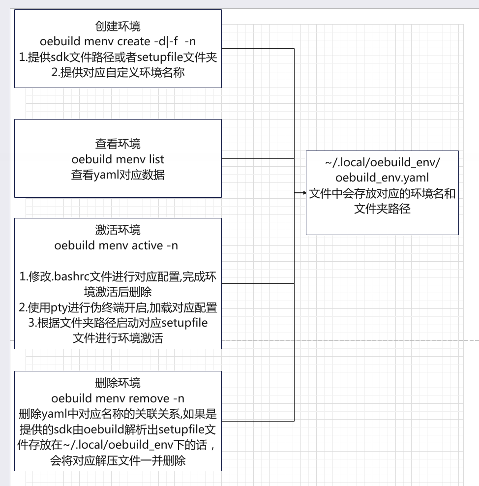
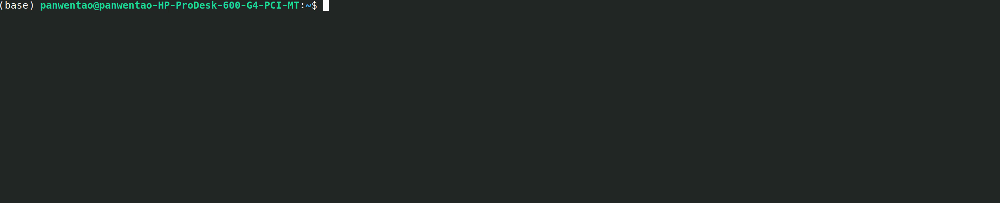
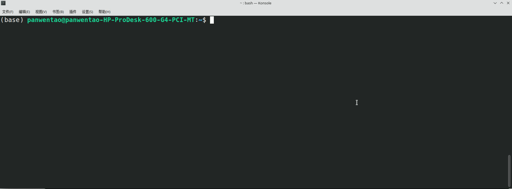
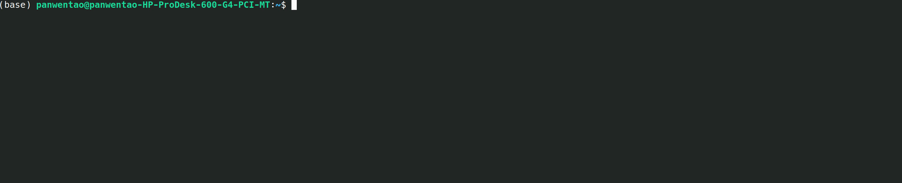

环境管理命令–menv¶
该命令用于在存在setup_file文件或者对应sdk文件时,按照对应命令提示提供文件路径,则会自动在当前环境变量的基础上生成一个新的伪终端， 将所需环境配置到伪终端中，实现对应编译环境准备。用户在准备完成的环境中可以进行对应的功能包编译，并且该环境不会影响宿主机环境。
实现原理如下图所示:
create: 创建环境¶
此命令会在~/.local文件夹下创建一个oebuild_env文件夹,里面会存放对应的yaml环境配置文件及sdk解压文件夹
oebuild menv create [-d directory] [-f file] -n file_name
其中-d参数为对应sdk已经解压完成的setup_file文件路径(这里只需要填到文件存放的上一层绝对路径即可，无需指定对应文件)。
Note
此路径下有且只能有一个setup_file文件
-f参数为对应速度sdk存储的路径,使用此命令后会在oebuild_env文件夹下创建一个对应file_name文件夹。
Note
-d -f两个参数只能二选其一
如下图所示：
执行完上述命令后会有对应的创建成功提示，并显示出当前创建的环境名和对应文件路径。
list: 查看环境¶
此命令可以查看当前有哪些环境配置。
oebuild menv list
如下图所示：
active: 激活环境¶
此命令可以激活对应名称的环境。
oebuild menv active -n env_name
其中env_name为用户自定义的环境名称,可以使用list命令进行查看后再激活。激活完成后会出现对应的提示。
如下图所示：
remove: 删除环境¶
此命令可以删除对应名称的环境配置，如果是使用sdk进行的环境添加，则还会删除对应的sdk解压文件。
oebuild menv remove -n env_name
其中env_name为用户自定义的环境名称,可以使用list命令进行查看后再进行删除。删除后会有成功删除的提示。
如下图所示：
